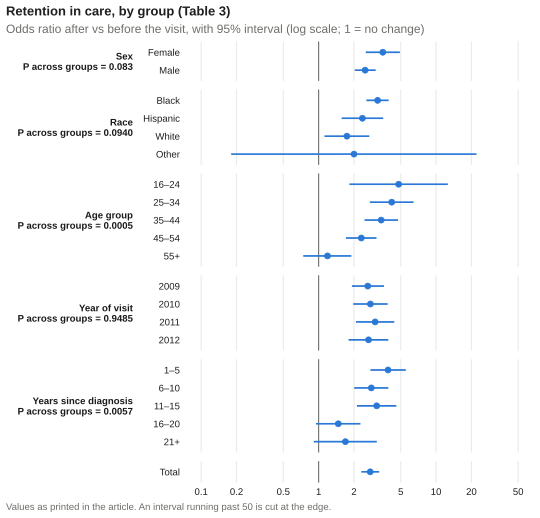

Text highlighted like this is provisional: it depends on a decision the analysis plan has not yet made.
ResultsWhere these numbers come from
Every number on this page is quoted from the published article (Flash et al. 2015), with its place there. None was produced by the code in this repository, which has not been run on the study data. The table is rebuilt from the values the article prints, typed in from it, and laid out by the same functions that R/tables.R applies to the data; the article’s own typeset tables and Figure 1 are in the article (author manuscript in PubMed Central).
This page maps each result the article reports for retention in care to the step of the code that computes it, then shows the article’s table with its printed values. The overview has the cohort and Table 1; Engagement in care and Viral suppression have the other two outcomes.
What the article reports, and the code behind it
Result (article, Results, “Retention in care” paragraph)
Decision pending: which of the code’s two era-comparison samples produced the article’s era P values (decision issue #2).
Reading the table.n is the patients with both values, and # and % the patients with the outcome before and after the visit. The odds ratio compares the patients whose outcome improved with those whose outcome got worse, from the conditional logistic regression (a Wald 95% interval). It is not a ratio of the two percentages. P within group tests the change in that category; P across groups tests whether the change differs between the categories, without adjustment for the number of tests (Wang et al. 2007). On a narrow screen the tables scroll sideways. Below the table, a forest plot shows the same odds ratios.
Table 3. Retention in care before and after a RUSH-era emergency department visit
Click to show/hide R Code
format_outcome_table(published_rows("Table 3"), "**Retention in care**")
Retention in care
n
Before
After
Change within group
Difference across groups
#
%
#
%
OR after vs before (95% CI)
P within group
χ²
P across groups
Sex
2.99
0.083
Female
729
245
34%
356
49%
3.52 (2.52–4.92)
<0.001
Male
1339
434
32%
623
47%
2.49 (2.03–3.06)
<0.001
Race
6.39
0.0940
Black
1403
413
29%
644
46%
3.18 (2.55–3.95)
<0.001
Hispanic
354
167
47%
212
60%
2.36 (1.57–3.55)
<0.001
White
276
89
33%
112
41%
1.74 (1.12–2.70)
0.014
Other
35
10
29%
11
31%
2.00 (0.18–22.1)
0.571
Age group
20.17
0.0005
16–24
86
13
15%
32
37%
4.80 (1.83–12.6)
0.001
25–34
401
97
24%
180
45%
4.19 (2.73–6.43)
<0.001
35–44
661
207
31%
318
48%
3.41 (2.46–4.74)
<0.001
45–54
656
253
38%
334
51%
2.31 (1.71–3.11)
<0.001
55+
264
109
41%
115
44%
1.19 (0.74–1.90)
0.474
Year of visit
0.36
0.9485
2009
600
209
35%
297
50%
2.62 (1.92–3.60)
<0.001
2010
602
200
33%
281
47%
2.76 (1.97–3.87)
<0.001
2011
440
138
31%
211
48%
3.03 (2.08–4.41)
<0.001
2012
426
132
31%
190
45%
2.66 (1.80–3.92)
<0.001
Years since diagnosis
14.58
0.0057
1–5
627
185
30%
301
48%
3.90 (2.76–5.52)
<0.001
6–10
516
172
33%
257
50%
2.81 (2.01–3.92)
<0.001
11–15
484
153
32%
225
46%
3.12 (2.12–4.59)
<0.001
16–20
274
114
42%
130
47%
1.47 (0.95–2.27)
0.083
21+
167
55
33%
66
40%
1.69 (0.91–3.13)
0.097
Total
2068
679
33%
979
47%
2.75 (2.31–3.28)
<0.001
Source: the article’s Table 3. Its total before the visit, 679 of 2,068, is 32.8%; the Results text gives 32.6%.

Table 3’s odds ratios, drawn from the printed values by R/teaching_figures.R; each dot is a category’s odds ratio and the line its 95% interval, on a log scale.
References
Flash, Charlene A, Siavash Pasalar, Vagish Hemmige, et al. 2015. “Benefits of a Routine Opt-Out HIV Testing and Linkage to Care Program for Previously Diagnosed Patients in Publicly Funded Emergency Departments in Houston, TX.”Journal of Acquired Immune Deficiency Syndromes 69 (Suppl 1): S8–15. https://doi.org/10.1097/QAI.0000000000000578.
Wang, Rui, Stephen W Lagakos, James H Ware, David J Hunter, and Jeffrey M Drazen. 2007. “Statistics in Medicine—Reporting of Subgroup Analyses in Clinical Trials.”New England Journal of Medicine 357 (21): 2189–94. https://doi.org/10.1056/NEJMsr077003.
Source Code
---title: "Published results: retention in care"format: html---::: {.Results title="Where these numbers come from"}Every number on this page is quoted from the published article [@flash2015rush], with its place there. None was produced by the code in this repository, which has not been run on the study data. The table is rebuilt from the values the article prints, typed in from it, and laid out by the same functions that `R/tables.R` applies to the data; the article's own typeset tables and Figure 1 are in the [article](https://doi.org/10.1097/QAI.0000000000000578) (author manuscript in [PubMed Central](https://pmc.ncbi.nlm.nih.gov/articles/PMC4482220/)).:::This page maps each result the article reports for retention in care to the step of the code that computes it, then shows the article's table with its printed values. The [overview](published_results.qmd) has the cohort and Table 1; [Engagement in care](published_engagement.qmd) and [Viral suppression](published_suppression.qmd) have the other two outcomes.## What the article reports, and the code behind it| Result (article, Results, "Retention in care" paragraph) | Computed by ||---|---|| 32.6% before and 47.1% after, P < 0.001 |[`mcnemar-tests`](03_paired_comparisons.qmd#mcnemars-test); [`fit-visit-models`](04_fit_rush_era_models.qmd#the-effect-of-the-visit)|| Ages 16 to 24: 15% to 37%; ages 25 to 34: 24% to 45%; no significant change over 55 |[`crosstabs-by-characteristic`](03_paired_comparisons.qmd#crosstabs-by-characteristic); [`estimate-subgroup-effects`](04_fit_rush_era_models.qmd#the-effect-within-each-category)|| No change among the 29 people of other race or ethnicity (as printed; the article's Tables 1 to 4 give 35) | The same, for `race_group`|| Significant differences by age, and by years since diagnosis (greater improvement with fewer than 16 years) |[`test-subgroup-interactions`](04_fit_rush_era_models.qmd#does-the-effect-differ); [`fit-combined-models`](04_fit_rush_era_models.qmd#years-since-diagnosis-and-age-together)|| The RUSH-era visit was significantly more likely to improve retention, P < 0.001 |[`fit-era-models`](05_compare_eras.qmd#the-era-model), the interaction term |**Decision pending:** which of the code's two era-comparison samples produced the article's era P values (decision issue [#2](https://github.com/VagishHemmige/Harris-Health-RUSH/issues/2)).```{r}#| label: read-published-values#| eval: true#| include: false# Reads only the two files of values typed in from the article, and defines# the table functions; reads no study data and fits nothing.source("_published_values.R")```**Reading the table.** *n* is the patients with both values, and # and % the patients with the outcome before and after the visit. The odds ratio compares the patients whose outcome improved with those whose outcome got worse, from the conditional logistic regression (a Wald 95% interval). It is not a ratio of the two percentages. *P within group* tests the change in that category; *P across groups* tests whether the change differs between the categories, without adjustment for the number of tests [@wang2007subgroups]. On a narrow screen the tables scroll sideways. Below the table, a forest plot shows the same odds ratios.## Table 3. Retention in care before and after a RUSH-era emergency department visit```{r}#| label: show-table-3#| eval: trueformat_outcome_table(published_rows("Table 3"), "**Retention in care**")```Source: the article's Table 3. Its total before the visit, 679 of 2,068, is 32.8%; the Results text gives 32.6%.::: {.teaching-figure}; each dot is a category's odds ratio and the line its 95% interval, on a log scale.](teaching_figures/forest_table_3.svg){fig-alt="Forest plot of the odds ratio for retention after versus before the visit, for each category of sex, race, age group, year of visit and years since diagnosis, and the total. Most intervals lie above 1; those for ages 55 and over, Other race and 16 or more years since diagnosis include 1. The values are those of the table above."}:::## References::: {#refs}:::
![]()